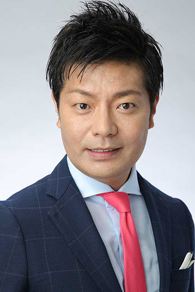
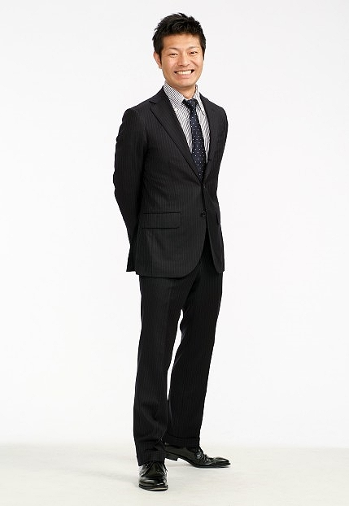
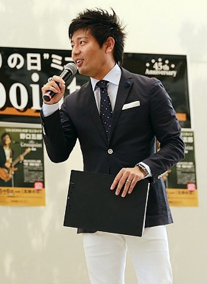

PROFILE
高森 てつ





高森 てつTetsu Takamori
| カテゴリ | MC/司会、ナレーター、宅録、ラジオDJ |
|---|---|
| 地域 | 関東 |
| 身長 | 172cm |
| 趣味 | ニス、サーフィン、音楽、読書、映画、観劇 |
| 特技 | ラジオワンマンDJ、スポーツ実況 |
| 資格 | 普通自動車第一種運転免許
普通自動二輪運転免許 |
| 音声サンプル | |
| SNS |
経歴
【スタジアムDJ】
- 東日本大震災復興支援 バスケットボール女子日本代表 国際親善試合2014
- 三菱電機カップ 関東大学バスケットボール連盟 創立90周年記念試合
- JHL SEASON 2013-2014 第38回 日本ハンドボールリーグ
- JHL SEASON 2012-2013 第37回 日本ハンドボールリーグ
- NBL ALL-STAR GAME 2013-2014 in TOKYO
- 日本プロバスケットボールリーグBJリーグ
- 第66回全日本体操競技選手権大会 兼 第30回オリンピック・ロンドン大会第二次選考競技会
- 第51回NHK杯体操
- イオンカップ2011～2012世界新体操クラブ選手権
【TV】
- YOUテレビ「横浜カップジュニア体操競技選手権大会」第4回～第5回
- テレビ埼玉「埼玉スウィン招待水泳競技大会」第5回～第6回
- パ・リーグTVライブ配信「埼玉西武ライオンズ LIONS THANKS FESTA 2014！」リポーター/影アナ
- CS/BS生中継 陸上自衛隊「 平成26年度 富士総合火力演習 」実況
- BS-TBS「LBO日本女子ボウリング機構DHCレディースボウリングツアー2013」実況
【cm】
- 楽天証券 WEB cm インタビュアー役
- 香川県cm 「恋するうどん県」ナレーション
- その他、九州限定cm、ラジオcmナレーションなど多数
【MA】
- テレビ埼玉「KEEP CHANGING ～深谷高校ラグビー部 全国制覇に向かって～」
- テレビ埼玉「Lions Channel 2012/01－2014/03」
- テレビ埼玉「尚文昌武 県立浦和高校ラグビー部 花園への軌跡」
- 東京MX「FC東京魂 JリーグLIVE2014」オープニングVTR
- 東京MX「自転車プロロードレース特番 J PROTOURダイジェスト2012」
- 第53期下期 ファーストリテイリング コンベンション 映像ナレーション、ボイスオーバー
- 正智深谷高校サッカー部VP
- 武州ガスVP
- サムスン電子社内コンプライアンスDVD日本語ローカライズ
- 米国大使館 東京 移民ビザ申請手続き WEB映像
- 日本抗酸化学会VP
- 畜産のeラーニング
- 健康食品「えがお」パブリシティ番組
- 杉養蜂園パブリシティ番組
- 阿蘇マイスタードルフVP
- サーパスマンションVP
- 宮崎県交通安全協会VP
- 神山モータースVP
- アイスマン株式会社VP
- JA宮崎VP「情熱みやざき」
- MRT宮崎放送 テレショップ「坂井さん一家のお買い物」
- MRT宮崎放送・UMKテレビ宮崎 共通番組「オレンジタイム」
- UMKテレビ宮崎「極真空手第18回オープントーナメント全九州空手道選手権」
【実況MC】
- NBL ALL-STAR GAME 2014-2015 in TOKYO
- 2014/15 V・PREMIER LEAGUE 男子 FINALSTAGE FINAL6 東京大会
- 2014/15 V・PREMIER LEAGUE 女子 FINALSTAGE FINAL6 東京大会
- NBL2014-2015 SEASON
- NBL2013-2014 PLAYOFFS FAINAL
- 2015京都栄養医療専門学校栄養士科スポーツフェスティバル
- 第54期下期ファーストリテイリング・コンベンション
- Vプレミアリーグ男子 2014-2015 SEASON 東京大会
- KDDIスポーツフェスティバル2014
- 第39回日本ハンドボールリーグ 2014-2015 SEASON
- 第38回 大阪弁護士会 大運動会
- ハンドボール 男子U-16 日韓スポーツ交流 日本 vs 韓国 会場実況
【司会】
- “56(GORO)の日”ミニライブ 野口五郎 45th Crosspoint in 幕張
- 「Mart 10th Anniversary Mart×TOYOTA NOAH 」Special Event Mart専属モデル：加藤珠美、加藤幸子、Mart編集長：大給近憲 子役：鈴木梨央(TOYOTA NOAH cm 出演)
- 育児・教育ジャーナリスト：おおたとしまさ
- NBL東芝ブレイブサンダース神奈川「2014ファン感謝デー」
- グットイヤータイヤ ・トヨタ自動車 記念イベント＠アメリカ
- TORQUE EXTREME FES
- Special Guest ヒロミ、平山ユージ PRO FREE CLIMBER、井手川直樹 MTB DOWNHILL RACER
- JTL 日本トップリーグ連携機構
- 駒沢オリンピック公園総合運動場 屋内球技場・第一球技場メモリアルイベント
- ボールゲームフェスタ IN 駒沢オリンピック公園総合運動場
- 第53期下期 ファーストリテイリング コンベンション
- スポーツ祭東京2013 表彰式など
- FC東京2013キッズクラブフェスティバル presented by 森ビル
- 東京サンレーヴスブースター感謝祭
- 西武鉄道 企業イベント「Smile Family Festival」2012～2013
- DeNA 企業イベント「DeNA FESTA」
- 第43回東京モーターショー2013/ボルボグループ傘下 UD TRUCKS パフォーマンス、ステージMC
- 小田急電鉄 企業イベント「Odakyu Friendship Festival」
- 民間放送連盟東京支社長会 作詞家松井五郎氏 講演会
【ラジオDJ】
- FM鹿児島「九州電力 presents RADION-Q」DJ
- FM鹿児島「FRIDAY AIR SHUFFLE EVENING TRACKS」DJ
- FM鹿児島「COUNTDOWN音力祭」DJ
- RKK熊本放送「SUNDAY SMILE STATION」DJ
- RKK熊本放送「青春walker」 DJ
- RKK熊本放送「ＲＫＫ ＣＯＵＮＴ ＤＯＷＮ ＲＡＤＩＯ」 DJ
- MRT宮崎放送「くらしのレーダー」 PERSONALITY
- MRT宮崎放送「ＳＯＵＮＤ ＧＲＯＯＶＥ」 DJ
- MRT宮崎放送「昼昼ステーション」 DJ